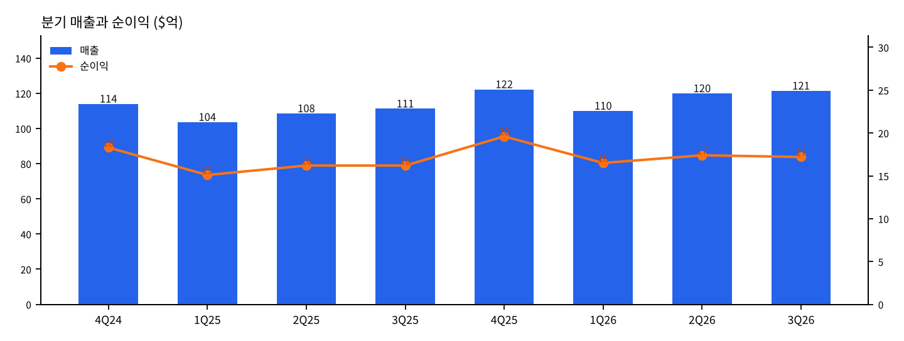
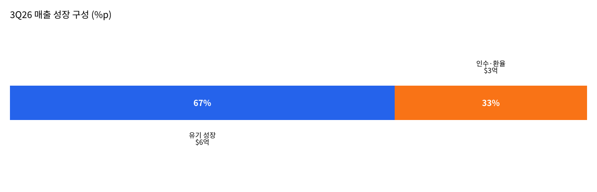
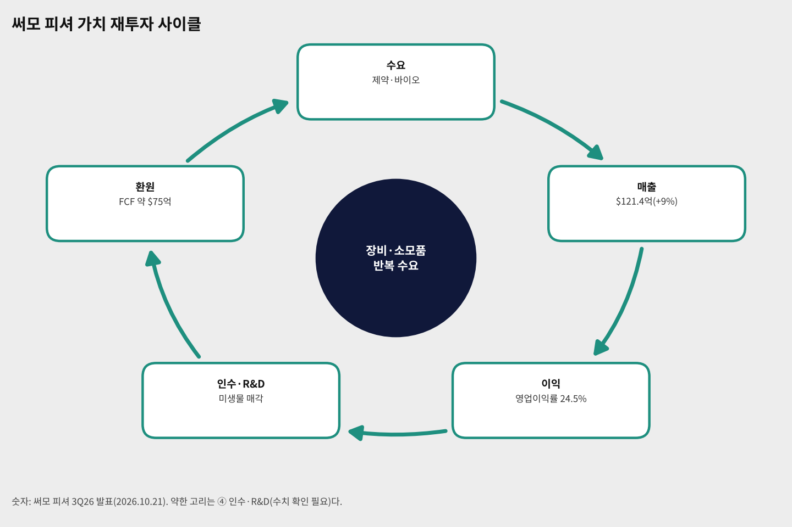

써모 피셔는 분석 장비·실험실 소모품·바이오제약 서비스를 파는 회사다. 이번 분기 4개 부문이 모두 성장했고 제약 쪽 수요가 개선됐다고 설명했다.
| 항목 | 내용 |
|---|---|
| 종목 | Thermo Fisher Scientific (TMO) · NYSE · 헬스케어(생명과학 도구) · 매사추세츠 월섬 |
| 멀티플 | PER·P/S는 08·09 항목 표 참조 |
| 최근 분기(3Q26) | 매출 $121.4억, 조정 EPS $6.68 |
| 가이던스(FY26) | 매출 $477~482억, 조정 EPS $25.13~25.43 |
| 직원 수 | 약 125,000명(트레이딩뷰) |
| 직책 | 인물 | 역할·특징 |
|---|---|---|
| 회장·CEO | 마크 캐스퍼(Marc Casper) | '검증된 성장 전략과 PPI 사업 시스템'을 성과 요인으로 강조 |
| CFO | 스티븐 윌리엄슨(Stephen Williamson) | (확인 필요) |
경영 스타일: 'PPI 사업 시스템으로 생산성·성장 병행'. 인수와 매각(미생물 사업)으로 포트폴리오를 조정한다.
분석 장비와 반복 구매 소모품, 제약 위탁 서비스를 결합한다.
제약 연구·생산 수요 개선을 성장 동력으로 본다.
다음 실적발표는 세 가지 질문에 답하는 자리다.
1. 유기 성장 +6%가 이어지나?
2. 마진 확대가 계속되나?
3. 인수·매각이 이익에 기여하나?
한 줄 판정 규칙: 첫 질문(유기 성장)과 둘째 질문(마진)이 유지되면 약한 고리(제약·학계 수요 불확실성)가 풀린다.
일정: 4Q26 실적 발표는 트레이딩뷰 기준 2027.02.04(확인 필요).
| 분기 | 매출 | 순이익 | EPS | 조정 EPS | 특이 사항 |
|---|---|---|---|---|---|
| 4Q24 | $114.0억 | $18.3억 | 4.78 | 6.10 | |
| 1Q25 | $103.6억 | $15.1억 | 3.98 | 5.15 | |
| 2Q25 | $108.5억 | $16.2억 | 4.28 | 5.36 | |
| 3Q25 | $111.2억 | $16.2억 | 4.28 | 5.79 | |
| 4Q25 | $122.2억 | $19.6억 | 5.21 | 6.57 | |
| 1Q26 | $110.0억 | $16.5억 | 4.43 | 5.44 | |
| 2Q26 | $119.9억 | $17.4억 | 4.68 | 6.03 | |
| 3Q26 | $121.4억 | $17.2억 | 4.64 | 6.68 | 조정 EPS $6.68(+15%), 미생물 사업 매각 완료 |
3Q26 매출 $121.4억(+9%, 유기 +6%), GAAP EPS $4.64(+9%), 조정 EPS $6.68(+15%)(회사 발표 2026.10.21). 매출·순이익·EPS(GAAP 희석)는 트레이딩뷰 스캐너, 조정 EPS는 트레이딩뷰 실적 페이지의 Reported 값이다. 분기 정렬은 오래된 분기→최신이다.

흐름 요약: 최근 분기 매출은 $121.4억로 전년 동기 $111.2억 대비 +9.2%, 순이익은 $17.2억(전년 $16.2억)다. 최근 4분기 GAAP EPS는 $18.96, 조정 EPS는 $24.72다.
| 성장 요인 | 내용 | 3Q26 기여 | 비고 |
|---|---|---|---|
| 유기 성장 | 기존 사업 성장 | +6%p | 회사 발표 |
| 인수·환율(내 계산) | 총 +9% − 유기 | +3%p | 회사가 부문별 인수 효과를 구분하지 않아 합산 |

부문별 매출은 확인하지 못해 '성장 요인'으로 대신했다. 총 +9% 중 유기가 +6%p, 나머지 +3%p는 인수·환율 효과(내 계산)다.
써모 피셔는 '세계를 더 건강하고 깨끗하고 안전하게 만드는 것'을 목표로 한다.
| 축 | 내용 |
|---|---|
| 제약 | 제약·바이오 R&D·생산 장비·서비스 |
| 효율 | PPI 사업 시스템 |
| 자본 | 인수·매각 |

| 이동평균 | 값 | 종가 대비 | 위치 |
|---|---|---|---|
| 5일선 | $694.10 | -0.2% | 종가 아래 |
| 20일선 | $696.28 | -0.5% | 종가 아래 |
| 50일선 | $675.59 | +2.5% | 종가 위 |
| 100일선 | $625.05 | +10.8% | 종가 위 |
| 200일선 | $557.08 | +24.4% | 종가 위 |
52주 고가 $727.56(2026-11-11)·저가 $435.27(2026-05-18) 범위에서 종가 $692.74는 50일선, 100일선, 200일선을 웃돌고 5일선, 20일선은 밑돈다.
| 규칙 | 기준 | 현재 값 | 신호 |
|---|---|---|---|
| 장기 추세 필터 | 종가 vs 200일선 | $692.74 > $557.08 | 매수 |
| 중장기 교차 | 50일선 vs 200일선 | $675.59 > $557.08 | 매수 |
| 단기 교차 | 20일선 vs 50일선 | $696.28 > $675.59 | 매수 |
| 돈키언 채널 | 55일 고가 $727.56 / 저가 $594.82 | 중간값 $661.19 위 | 매수 |
| 1개월 모멘텀 | 21거래일 수익률 | +0.8% (기준 $687.37) | 매수 |
| 3개월 모멘텀 | 63거래일 수익률 | +10.4% (기준 $627.55) | 매수 |
| 6개월 모멘텀 | 126거래일 수익률 | +53.3% (기준 $451.79) | 매수 |
| 12개월 모멘텀 | 252거래일 수익률 | +22.1% (기준 $567.16) | 매수 |
| 종합 (8개 평균) | +1.00 | 강한 매수 |
해석: 매수 신호 8개(장기 추세 필터, 중장기 교차, 단기 교차, 돈키언 채널, 1개월 모멘텀, 3개월 모멘텀, 6개월 모멘텀, 12개월 모멘텀), 매도 신호 0개(없음). CTA 점수 +1.00(강한 매수). 14일 ATR $20.25 (2.9%), 52주 고가 $727.56 · 저가 $435.27.
| 가격 | 기준 | 무엇이 바뀌나 |
|---|---|---|
| $727.56 | 55일 고가 | 돌파 시 채널 상단 갱신 |
| $687.37 | 1개월 모멘텀 기준가 | 종가가 이 가격 위면 1개월 신호 매수 |
| $661.19 | 돈키언 중간값 | 55일 채널 중간값 위/아래로 신호가 바뀜 |
| $627.55 | 3개월 모멘텀 기준가 | 종가가 이 가격 위면 3개월 신호 매수 |
| $594.82 | 55일 저가 | 이탈 시 채널 하단 갱신 |
| $567.16 | 12개월 모멘텀 기준가 | 종가가 이 가격 위면 12개월 신호 매수 |
| $557.08 | 200일선 | 종가가 이 선 위/아래인지로 장기 추세 신호가 바뀜 |
| $451.79 | 6개월 모멘텀 기준가 | 종가가 이 가격 위면 6개월 신호 매수 |
가격 수준은 신호가 바뀌는 기준선일 뿐 진입·청산 가격 제안이 아니다. 20일/50일 교차는 이동평균 자체가 움직여 단일 가격으로 표시하지 않았다. 일봉·주봉은 종가 기준 직접 계산(고저 데이터 미사용)이다.
| 악재 요인 | 내용 | 강도 |
|---|---|---|
| 제약·학계 수요 | 제약 R&D 투자 변동 | 중간 |
| 가이던스 상향 부담 | 이미 상향한 후 달성 부담 | 중간 |
| 관세·원가 | 마진 영향(확인 필요) | 중간 |
| PEG 높음 | PEG 3.8(트레이딩뷰) | 높음 |
| 티커 | 회사 | PER(TTM) | PEG | P/S | EPS 성장(YoY) |
|---|---|---|---|---|---|
| TMO | 써모 피셔 사이언티픽 | 36.5배 | 3.86 | 5.42배 | +9% |
| DHR | 다나허 | 37.4배 | 1.44 | 6.23배 | +26% |
| A | 애질런트 | 34.9배 | 1.77 | 6.61배 | +19% |
| IQV | 아이큐비아 | 31.3배 | 2.41 | 2.48배 | +13% |
| ABT | 애보트 | 38.6배 | – | 3.77배 | -66% |
비교 결론: 써모 피셔 PER은 다나허와 비슷하고 애질런트보다 높은 구간이다.
써모 피셔는 FCF 목표가 약 $75억 수준이다(회사 발표 요약).
| 지표 | 값 | 출처 | 해석 |
|---|---|---|---|
| 현금·단기투자 | $61억 | 트레이딩뷰 스캐너(최근 분기) | |
| 총부채 | $414억 | 트레이딩뷰 스캐너(최근 분기) | |
| 순부채(부채−현금) | $353억 | 내 계산 | 현금 대비 부채 부담 |
| 잉여현금흐름(TTM) | $76억 | 트레이딩뷰 스캐너 | |
| TTM 매출 | $474억 | 트레이딩뷰 스캐너 |
| 기준 | 매출 | P/S | 비고 |
|---|---|---|---|
| 내 계산(종가 ÷ 최근 4분기 매출 합계) | $473.5억 | 5.42배 | 시총은 정렬용 데이터에서만 사용 |
| 동종(트레이딩뷰) | – | DHR 6.23배 · A 6.61배 · IQV 2.48배 · ABT 3.77배 | 11.19 |
해석: P/S 5.38배는 다나허(6.23배)보다 낮다.
EBITDA는 영업활동의 현금 창출력을 보는 지표이고, PEG는 PER을 EPS 성장률로 나눈 값이다. EBITDA·FCF는 트레이딩뷰 TTM 값이다.
| 지표 | 값 | 산출 |
|---|---|---|
| EBITDA(TTM) | $122억 | 트레이딩뷰 스캐너 |
| EBITDA 마진 | 25.7% | EBITDA ÷ TTM 매출(내 계산) |
| FCF 마진 | 16.0% | FCF ÷ TTM 매출(내 계산) |
| PER(GAAP TTM) | 36.5배 | $692.74 ÷ $18.96 |
| PER(조정 TTM) | 28.0배 | $692.74 ÷ $24.72 |
| 방식 | PER | EPS 성장률 | PEG | 판정 |
|---|---|---|---|---|
| GAAP EPS (TTM $18.96) | 36.5배 | +9% ($17.32 → $18.96) | 3.86 | 기준 초과 |
| 조정 EPS (TTM $24.72) | 28.0배 | +10% ($22.40 → $24.72) | 2.71 | 기준 초과 |
판정: GAAP EPS 기준 PEG 3.86 → 1.0 초과 PEG 기준은 1.0 이하 투자 적격, 0.5 이하 적극 매수다. EPS 성장률은 최근 4분기 EPS 합계를 직전 4분기 합계와 비교한 값(내 계산)이고, 일회성 항목이 있으면 조정 EPS 행을 함께 본다.

써모 피셔의 사이클은 장비·소모품 수요 → 매출 → 이익 → 인수·R&D → 환원이다.
| 고리 | 현재 숫자 | 고리 강도 | 약해지는 신호 |
|---|---|---|---|
| ① 수요 | 제약·바이오 R&D, 전자현미경 | 강함 | 수요 변동 |
| ② 매출 | $121.4억(+9%) | 강함 | 유기 둔화 |
| ③ 이익 | 조정 영업이익률 24.5% | 강함 | 원가 |
| ④ 인수·R&D | 미생물 사업 매각, 바이오제약 인수 | 진행 중 | 통합 비용 |
| ⑤ 환원 | FCF 약 $75억 | 보통 | 투자 우선 |
사이클의 특징: 가장 약한 곳은 ④ 인수·R&D다. 이번 조사에서 R&D 수치를 확인하지 못했다(확인 필요).